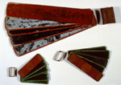

Houten ‘leitjes’ voor het opschrijven en bewaren van teksten van vluchtige aard. Afmetingen a: 80 x 460 mm, b: 50 x 205 mm, c: 45 x 150 mm. Tibet of Nepal, twintigste eeuw. -- (Or. 17.116 a, b, c)
Getoond worden combinaties van telkens vijf plankjes, waarvan de beide buitenste tevens als afdekplat dienen, en die in dat geval slechts aan één zijde worden beschreven. Het schrijfoppervlak is voorzien van zwarte lak. Deze wordt bedekt met krijtstof, en hierin kan, in negatief, worden geschreven. De plankjes zijn uit één stuk gesneden en omdat het schrijfoppervlak enigszins verzonken is, kunnen de teksten op tegenoverliggende plankjes elkaar niet aanraken en dus niet beschadigen. De buitenzijden van de afdekplatten zijn beschilderd, en die van het grootste van de drie ‘boekjes’ zijn bovendien gevernist. De plankjes worden bijeengehouden met genaaide, strak passende, leren bandjes.
De vorm van de brievenboekjes is opmerkelijk. Deze is kennelijk geïnspireerd op de formaten van handschriften op palmblad, waarvan het uiterlijk een noodzakelijk gevolg van de natuurlijke vorm van het gebruikte materiaal is. Bij hout is deze noodzaak in veel mindere mate aanwezig, maar toch heeft men het kennelijk nodig gevonden dit formaat aan te houden. Bij de verwerving van de brievenboekjes was geen tekst aanwezig, maar men mag aannemen dat de schrijver de tekst over de breedte, dus evenwijdig aan de lange kant zou hebben geschreven. Ook het krassen in een zacht oppervlak, hier dus de krijtlaag, is een procédé dat vergelijkbaar is met de schrijfwijze op palmblad, waarbij met een scherpe pen, of eerder een soort schrijfmes, de tekst in het oppervlak van het blad wordt gegraveerd. Het idee van versierde of bewerkte afdekplatten past ook geheel in de Zuid- en Zuidoost-Aziatische traditie van boekvormen.
| vorige pagina | top pagina |